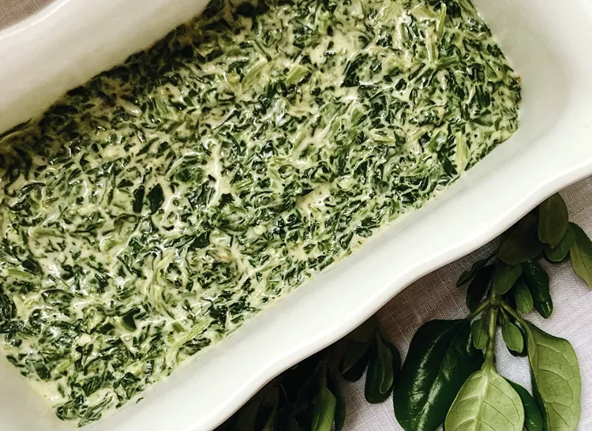

River Road Spinach Madeline

Description
First published in 1959 in River Road Recipes, the Junior League of Baton Rouge's community cookbook,
spinach Madeline remains a favorite side dish in Southern Louisiana.
Thick and creamy with a hint of jalapeno heat, it's most at home on holidays next to turkey, cornbread dressing,
and green bean casserole. It's easy to make and easy to multiply for big gatherings.
This may be served immediately or put into a casserole and topped with buttered bread crumbs.
The flavor is improved if the latter is done and kept in the refrigerator overnight. This may also be frozen.
Ingredients
- 2 (10 ounce) packages frozen chopped spinach
- ½ cup water
- ¼ cup butter
- 2 tablespoons all-purpose flour
- 2 tablespoons chopped onion
- ½ cup evaporated milk
- 6 ounces processed cheese spread with jalapeno (such as Velveeta(R)), diced
- ¾ teaspoon celery salt
- ¾ teaspoon garlic salt
- 1 teaspoon Worcestershire sauce
- ½ teaspoon black pepper
- ¼ teaspoon cayenne pepper, or to taste
- salt to taste
Steps
-
Place frozen spinach and water in a saucepan over high heat; bring to a full boil.
Reduce heat to medium, cover, and cook for 8 minutes.
Separate with a fork and cook for 2 more minutes. Drain, reserving 1/2 cup of the cooking liquid.
-
Melt butter in a saucepan over low heat.
Add flour, stirring until blended and smooth, but not brown, 1 to 2 minutes. Add onion and cook until soft but not brown, 5 to 7 minutes.
-
Slowly add evaporated milk and the reserved cooking liquid, stirring constantly to avoid lumps.
Cook, stirring constantly, until smooth and thick, 3 to 5 minutes.
Add processed cheese spread, celery salt, garlic salt, pepper, cayenne, and salt;
cook and stir until melted, about 2 to 3 minutes. Stir in cooked spinach.
- Stir in cooked spinach and serve immediately.